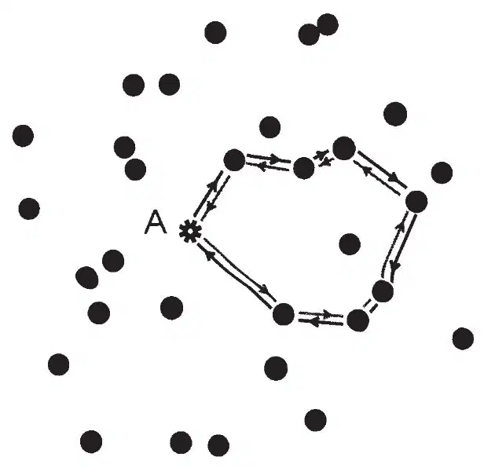
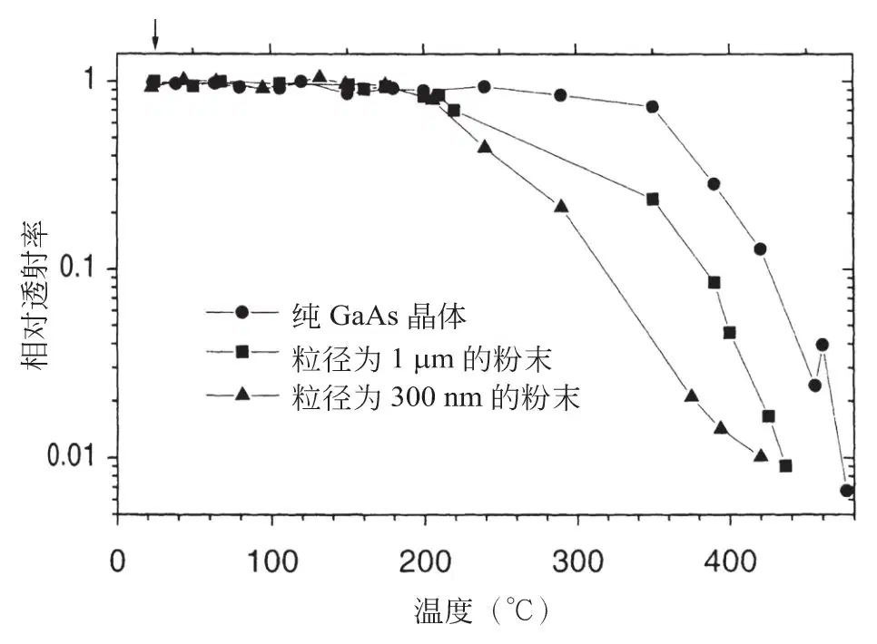
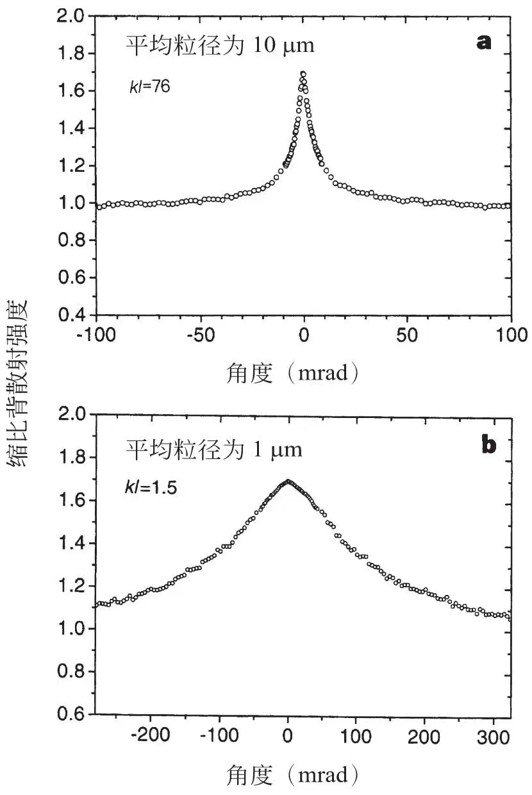
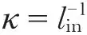
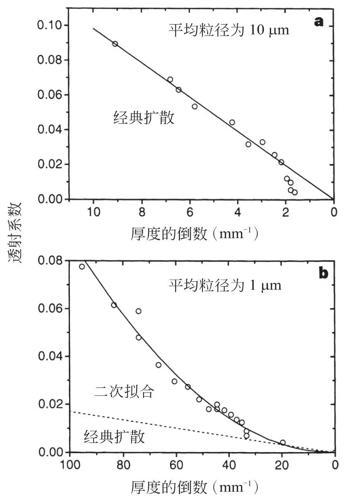
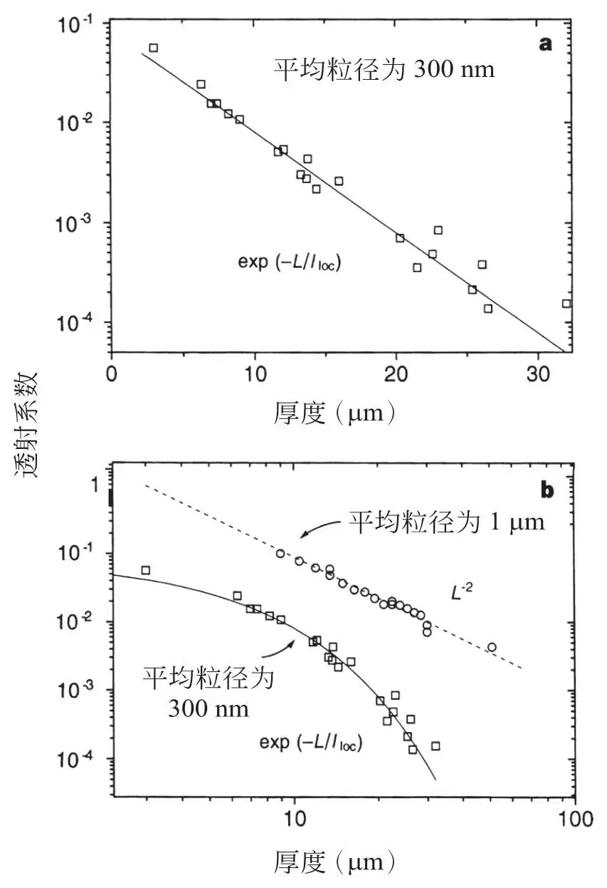

英文
英文维尔斯马等
编者按
量子物理学指出，在材料的无序程度足够显著的情况下，粒子在该材料中的扩散会被波的相消干涉所抑制。这种强烈的局域化现象，或者叫“安德森局域化”（因为该现象最早是由物理学家菲利普·安德森描述出来的），影响了电子在多种固体中的行为，而且也会影响光子的行为。在本文中，迪德里克·维尔斯马和他的同事们用实验证实了光在半导体粉末中的安德森局域化。他们研究了光在砷化镓晶体中和在具有不同粒度的几种砷化镓粉末中的透射。他们发现，光透射率在某一粒度值处出现一个显著的阈值，在该处，无序诱导的局域化完全阻挡了光的透射，导致样品的透射系数随样品厚度呈指数下降而非线性下降。 英文
安德森局域化[1]现象是科学家预测到的无序材料不同寻常的传输性质之一。这是一种由无序环境诱导产生的电子传输行为上的相变，表现为由经典的扩散向局域态的转变，而经典扩散是众所周知的欧姆定律适用的范围，局域态则对应绝缘体材料。这个效应来源于被固体中的缺陷多次散射的电子之间的干涉[2-10]。可以预料的是，电磁波的多次散射会产生相似的现象，但是有一个重要的简化：和电子不同，光子之间不会有相互作用。这使光子在无序材料中的传输成为研究安德森局域化的理想模型[10-17]。在本文中，利用基于强散射性半导体粉末的光学实验，我们报道了光的安德森局域化的直接实验证据。 英文
光的多次散射是生活中常见的现象，会出现在例如糖、雾、白色颜料、云中。光在这些介质中的传播通常可以用标准扩散过程来描述。对于光在无序材料中的扩散，欧姆定律依然适用，如同电子在电阻器中的扩散一样，即传导性随系统长度（厚度）线性下降。 英文
安德森局域化使经典扩散不再适用。也就是说，一旦散射量高于某一临界值，材料就出现局域态（见图1）。观察这种变化的最佳方式是测试系统的透射。在局域态中，透射系数随样品厚度呈指数减小，而非呈线性减小。转变过程中，透射系数预计会与厚度的倒数呈幂律相关，且很有可能是二次幂律[12,18]。 英文

图1．无序系统中波的安德森局域化来源于多次弹性散射的干涉。在这里我们把无序介质中的A点看作是一个光源（好比一个受激原子发射出一个光子）。这个光源用星号标记，而圆点表示散射点。一条能返回到光源的不规则光路可以从相反的两个方向去实现。这两支沿着这条回路反向传播的波会具有相同的相位，从而在A点形成相长干涉。这种情况导致波回到A点的概率增加而向远离A点方向传播的概率减小。一旦平均自由程l减小，出现这种回路的概率就增加了，并且在散射足够强的情况下，干涉会导致系统发生由普通传导态到局域态的相变。在局域区，系统表现为无吸收的光绝缘体。例如，照在一块平板上的光几乎都会被反射，仅剩的一点透射光会随板的厚度呈指数衰减。 英文
探寻光的局域化的最大难点在于实现足够强的散射。衡量散射量最恰当的方法是用光在介质中的平均自由程l乘以波矢量k的大小。局域化发生的条件为kl≤1（参考文献19），即（修正的）Ioffe–Regel判据。如果能意识到，低于kl=1时，在波被再次散射前电场不能完成一次振荡，我们便能直观地理解这条判据。迄今为止，对局域化效应的报告仅限于二维棒状系统中的微波[20]和封闭空间（充满金属和电介质球的铜管）里的微波[21,22]。在后者中，微波被大量吸收，导致数据解释变得复杂。和光波实验比起来，微波实验的劣势在于吸收难以避免。 英文
我们已利用半导体粉末实现光波的强散射。半导体可以具有很大的折射率，而对于带隙中的波长来说，吸收是极小的。我们使用波长λ=1,064 nm的光，在这个波长下纯砷化镓的吸收系数 ≪ 1 cm－1，折射率为3.48。我们的样品由纯的（99.999%）砷化镓（GaAs）晶体构成，是在陶瓷研钵里手动碾磨（以悬浮于甲醇的形式）以及在微型行星式高能球磨机中低速碾磨而成的。通过改变碾磨时间，我们得到了具有不同平均粒度从而具有不同散射量的样品。碾磨半导体时，操作人员必须非常小心，以确保实验中所用波长的光不会被吸收。对于粉末来说，表面态更为重要，并且碾磨过程（即使只用了很小的力）会引起应变或晶格形变。表面态、应变和晶格形变都会导致带边出现吸收带尾。通过测量透射率与温度的相关性，我们描绘了材料的带边变化（图2）。 英文
≪ 1 cm－1，折射率为3.48。我们的样品由纯的（99.999%）砷化镓（GaAs）晶体构成，是在陶瓷研钵里手动碾磨（以悬浮于甲醇的形式）以及在微型行星式高能球磨机中低速碾磨而成的。通过改变碾磨时间，我们得到了具有不同平均粒度从而具有不同散射量的样品。碾磨半导体时，操作人员必须非常小心，以确保实验中所用波长的光不会被吸收。对于粉末来说，表面态更为重要，并且碾磨过程（即使只用了很小的力）会引起应变或晶格形变。表面态、应变和晶格形变都会导致带边出现吸收带尾。通过测量透射率与温度的相关性，我们描绘了材料的带边变化（图2）。 英文

图2．纯GaAs晶体与粉末之间透射率与温度相关性的对比。图中展示了粒径为1 μm和300 nm的数据。粉末样品的透射率是在一个特定的厚度下测得的，即室温下总透射率为1%时的厚度。所有曲线都被按比例缩放，使得最高点是1。一旦温度T升高，带隙就移向低能量Eg（T），对应于高波长λg=1.24/Eg（单位是μm）。和温度的相关性满足经验关系：Eg（T）=Eg（0）-αT2/（T+β），其中（GaAs的）Eg（0）=1.522，α=8.871×10－4，β=572，T的单位是K。这种依赖于温度的移动，使在不改变激光波长的情况下，遍历带隙中激光波长附近的能量成为可能。例如，200 ℃的温度对应于65 nm的波长改变量。左上角的箭头指出了我们其余全部实验的操作温度。我们注意到，在GaAs晶体被碾磨得更细的时候，吸收带边缘变得没那么陡直了；这很可能是因为表面态和晶格形变的影响加重了。但是激光波长附近的波长区域仍然没有吸收。 英文
从图2中我们发现，在碾磨得更细的时候，吸收带边缘变得没那么陡直了，而且吸收的起始点移入带隙中了。然而另一个明确的方面是，吸收带尾所处的波长区域远比我们使用的激光的波长要小（65 nm），这样就保证了这种带尾不会使我们的实验里出现激光的吸收。 英文
为确定此材料中的平均自由程l，我们应用了相干背散射。该现象是反向传播的波之间的普通干涉效应，使背散射谱图上出现一个窄的锥形[23]。这被看作是安德森局域化的前身，也因此被称为“光的弱局域化”[24,25]。背散射的锥形的宽度和尖端的角度都与l成反比（参考文献26和27），从而使确定样品中的散射量成为可能。而且，尖端是由（理论上）无限长的光程得到的，所以只在没有吸收的情况下出现[26-28]。图3中，我们展示了粗粒粉末（图3a）和细粒粉末（图3b）的背散射锥形，粉末的平均粒径分别为10 μm和1 μm。从尖端的角度中我们发现，粗粒粉末中l=8.5 μm，所以kl=76，细粒粉末中l≈0.17 μm，所以kl≈1.5。观测值kl=1.5是迄今报道过的光波的最小kl值的四分之一[30]。无论从实验角度还是理论角度来看，向局域化转化的过程中，相干背散射锥的形状都很有趣，这一点会在别处讨论。 英文

图3．从粗粒（a）和细粒（b）GaAs粉末中得到的相干背散射锥。两种样品都有很大的多分散性，平均粒径分别为10 μm和1 μm。用来照射样品的是锁模Nd:YAG激光，频率为76 MHz，波长为1,064 nm，脉冲宽度为100 ps，光束直径为6 mm，入射功率为100 mW。在全部实验中，我们都避免了非线性吸收（如双光子吸收）。方法是把入射功率降低到20 mW后发现功率的降低并没有影响实验结果。检测是在保偏通道中进行的。平均自由程由锥形尖端的角度计算得出[27]，内反射也被考虑在内[29]。图a中数据得出的结果是l=8.5 μm，kl=76，图b则是l=0.17 μm，kl≈1.5。 英文
为了观测到一个可能的向局域化转化的过程，我们测量了透射系数随样品厚度的变化。图4a展示了粗粒粉末的透射系数。可以看出，这种透射完全表现为经典扩散，其中l=9.8 μm，与相干背散射得到的数据一致。在样品厚度特别大的时候（L>500 μm），由于吸收的出现，透射率的降低速度会超线性。因此粗粒粉末的值（定义为

）存在上限，约为0.13 cm－1，再次说明了碾磨过程不会引入吸收。 英文

图4．平均粒径不同的两种GaAs粉末透射系数的对比。此处，透射系数被定义为总透射通量与入射通量之比。总透射量是由紧贴样品背面的积分球测出的。光源和图3中的一样，光束直径为0.5 mm，发射功率为20 μW。图a中的数据来自直径为10 μm的颗粒，完全表现为经典扩散。实线为T=l / L，其中l=9.8 μm，这和背散射数据相符。图b中的数据对应粒径约1 μm的情况。虚线是按经典扩散作出的理论曲线，其中l=0.17 μm，由背散射数据所得。实线是实验数据的二次拟合。在转变为安德森局域化的过程中，透射系数与厚度的倒数的二次相关符合预期。 英文
图4b展示了细粒粉末的透射系数T。虚线是根据经典扩散画出的理论曲线，其中假设l=0.17 μm，即由背散射数据算出的值。虽然经典扩散中的T值会随样品厚度L的增大呈线性下降，但我们发现这些样品中出现了二次相关（T∝L－2）。这和以局域化标度理论预测出的向局域化转化的表现完全一致[12,18]。我们在此特别指出，任何经典扩散过程都不会呈现与系统尺度的二次相关。 英文
如果我们继续降低粒度，我们会（根据米氏散射理论）得到更强的散射。图5给出了一种平均粒径为300 nm的粉末的透射系数。从图5b中我们可以看出，在这种情况下二次相关已经变为指数衰减，符合局域区的预期。由于干涉，光不再透射，系统实现了由传导态到局域态的相变。指数衰减的特征长度尺度被称为局域化长度，此处为4.3 μm。 英文

图5．极细GaAs粉末的透射系数与厚度的关系。平均粒径为300 nm。图a中，数据被标在半对数坐标中。实线是指数化拟合曲线exp（-L/lloc），其中局域化长度lloc=4.3 μm。图b中，同样的数据被标在双对数坐标中，与图4b中的数做比较。我们可以看出，在极细的粉末中，二次相关变成了指数衰减。系统变为局域态，即表现为（无吸收的）光绝缘体。 英文
多种方法可以用来描绘完整的向局域化转化的过程。通过改变平均粒径、折射率对比度、颗粒密度以及光的波长，可以改变散射量。时间分辨透射实验是一种重要的实验，在该种实验中，向安德森局域化转化的过程中，扩散常数的减小是可观测到的。经典波的局域化在很多方面都类似于电子的安德森局域化。然而，光和电子有一些有趣的不同点。在光波实验中，相干（激光）光源是可实现的；这种光源的波长是很容易调节的。而且，电磁波中的光子–光子相互作用可以忽略不计，但是电子体系中的电子–电子相互作用总是对实验有影响。后者这种特性使在强无序介质中的光成为一个研究安德森局域化转变的有趣系统。 英文
（葛聆沨 翻译；翟天瑞 审稿）